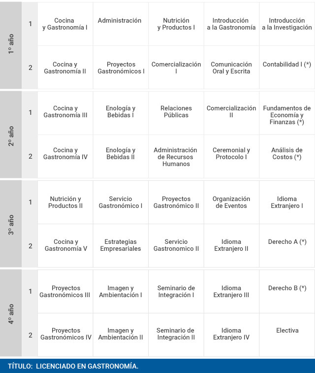

Perfil de Egreso
El alumno egresado de la Licenciatura en Gastronomía además de tener los conocimientos, tendrá las habilidades, fortalezas, destrezas, valores, actitudes para ser un profesional de alto rendimiento capaz de desarrollarse en cualquier campo laboral.
VALORES
Honestidad: En la actuación personal y en el desarrollo de sus actividades laborales.
Lealtad: A su trabajo, empresa o complejo en el que se desarrolle; obteniendo con ello un amplio sentido de pertenencia.
ACTITUDES:
De ética y compromiso en el ámbito gastronómico.
De respeto y empatía hacia el trabajo individual.
ADQUIRIRA CONOCIMIENTOS DE:
Del manejo de equipos de cocina, desde la de un restaurante tradicional, hasta las cocinas de algún hospital o empresas.
La prevención, planeación, organización, integración, dirección y control de los diferentes tipos de restaurantes y del personal que labora en los mismos.
TENDRA LAS HABILIDADES PARA:
Desarrollar el aprendizaje adquirido en la preparación, presentación y evaluación de alimentos ya sean estos para establecimientos comerciales, particulares y turísticos.
Ser un emprendedor, dando origen a su propio negocio de gastronomía, pudiendo manejarlo, operarlo y llevarlo al éxito.
FORTALEZAS:
Tiene los conocimientos necesarios del área administrativa.
Tiene los conocimientos necesarios del área contable y financiera.
DESTREZAS:
Elaborar alimentos de toda índole, valiéndose de sus recursos disponibles.
Crear recetas y platillos en base a los conocimientos adquiridos.
CAMPO OCUPACIONAL
El egresado en la Licenciatura de Gastronomía podrá desarrollarse en los siguientes campos de acción:
En la planeación, promoción y organización de restaurantes y centros gastronómicos.
En el establecimiento y creación de restaurantes y centros gastronómicos.
Plan de estudios
El plan de estudios está compuesto por materias prácticas dictadas en el Colegio de Gastronomía Gato Dumas y asignaturas teóricas en la Universidad de Palermo.
La carrera tiene una duración de 4 años y forma profesionales para:
- Crear y gestionar su propio emprendimiento gastronómico.
- Gerenciar restaurantes, bodegas, cadenas gourmet, hoteles, estancias, franquicias, empresas de catering y eventos.
- Interpretar diversos escenarios de mercados y transformarlos en oportunidades de negocios.


 3
3